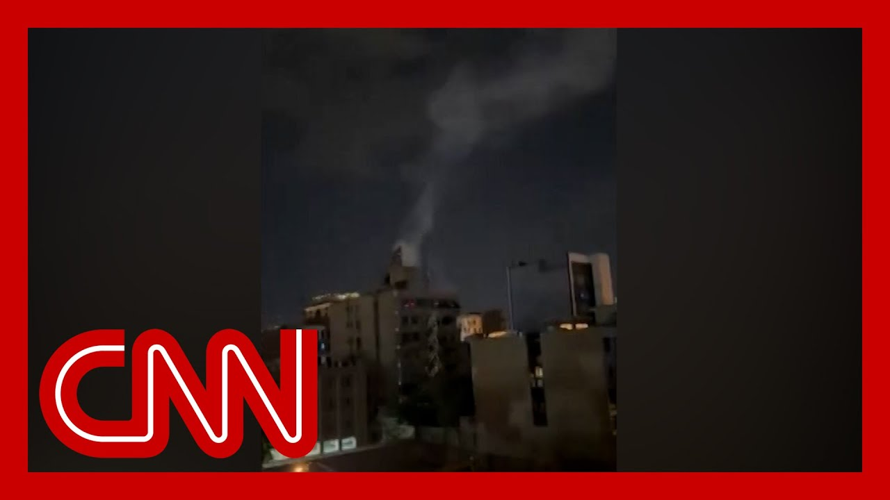

【以色列袭击伊朗核计划及军事目标，行动针对高层领导人和科学家】
Summary: Israel struck Iran's nuclear program and military targets, with Israeli sources confirming top leaders and scientists were targeted. Prime Minister Netanyahu stated the operation will continue for days. Senator Jeff Merkley criticized the move, linking it to the U.S. withdrawal from the JCPoA, while analysts warn of potential regional war and Iranian retaliation.
摘要： 以色列袭击了伊朗核计划及军事目标，以方消息证实行动针对高层领导人和科学家。总理内塔尼亚胡称行动将持续多日。参议员杰夫·默克利批评此举与美国退出伊核协议有关，分析人士警告可能引发地区战争及伊朗报复。

⏱️ Estimated Reading Time: 13 min
📚 六级生词 📚 雅思生词 📚 托福生词 📚 专八生词 📚 SAT生词 📚 考研生词 📚 GRE生词 📚 高考生词
Israel says that they struck Iran's nuclear program and other military targets.
以色列称其袭击了伊朗的核计划及其他军事目标。
And we have now confirmed from an Israeli security source in to CNN that top military leaders and nuclear scientists were targeted in these opening strikes.
CNN已从以色列安全消息人士处证实，初步打击针对高级军事领导人和核科学家。
But what we are hearing out of Iran tonight is this is not the end of it.
但今晚从伊朗传出的消息显示，此事尚未结束。
Prime Minister Benjamin Netanyahu himself, while defending the strike that Israel took, says this operation will continue for many days.
本杰明·内塔尼亚胡总理为以色列的袭击辩护时称，行动将持续多日。
I want to bring in Democratic Senator Jeff Merkley of Oregon, who sits on the Foreign Relations Committee and is joining me tonight.
现邀请参议院外交关系委员会成员、俄勒冈州民主党参议员杰夫·默克利加入讨论。
Thank you, Senator, for being here.
感谢参议员莅临。
Can I just first get your reaction to what we are seeing play out in Iran tonight?
您对今晚伊朗局势有何看法？
This is what absolutely what we've been expecting for several days.
这正是我们连日来预料的情况。
All the signs were there.
所有迹象均已显现。
We were removing all of our personnel from Iraq.
我们正从伊拉克撤离所有人员。
We were keeping forces stationed in the area.
我们在该地区驻留了部队。
The president was making kind of vague statements about the possibility.
总统此前对此事的表态模棱两可。
So this is what we were expecting.
因此这符合我们的预期。
Caitlin, what really strikes me is this is a tragedy that never had to happen.
凯特琳，令我震惊的是这场本可避免的悲剧。
I just think it's worth reminding that we would still be under very strict restrictions on Iran's nuclear program.
必须强调，若非退出伊核协议，伊朗核计划仍受严格限制。
Had we stayed in the JCPoA agreement, they had to put 97% of their nuclear materials outside the country.
若遵守协议，伊朗97%的核材料需转移境外。
They proceeded under a cap on enrichment was a little over 3% as compared to 90% necessary for nuclear weapon.
其浓缩铀丰度被限制在3%左右，远低于武器级所需的90%。
Massive monitoring of every facility that they had.
所有设施均受严密监控。
They had three paths to a nuclear weapon.
伊朗当时有三条拥核路径。
And one was a uranium path.
一是铀路径。
And that's what I've been describing.
即我刚才所述。
The sequence of plutonium path.
二是钚路径。
And they dismantled their plutonium reactor.
其钚反应堆已被拆除。
And the third was a covert path.
三是秘密路径。
And the covert path as well.
秘密路径同样。
That monitoring would have occurred.
本可受到监控。
All of these measures would still have been in place for another five years, had we not taken ourself out of the JCPoA and dismantled that framework.
若非美国退出协议，这些限制措施还将持续五年。
And of course, talks were happening right now for the Trump administration trying to strike a new agreement with Iran.
特朗普政府当时正试图与伊朗达成新协议。
We'll see what this means for that.
此事影响尚待观察。
But as far as what's happening tonight, does this mean this is now a regional war, in your view, between Israel and Iran?
但就今晚局势，您认为这是否意味着以伊已爆发地区战争？
Well, Israel is by far the superior power.
以色列目前占据绝对优势。
They're seizing this moment because they're at a peak of that.
他们正抓住这一时机。
Syria is in chaos.
叙利亚陷入混乱。
Hezbollah in Lebanon has been thoroughly deflated.
黎巴嫩真主党已遭重创。
And so in this moment, they are at the maximum ability to focus on a conflict with Iran.
因此以方此刻能全力应对伊朗。
We anticipate, of course, there will be a reaction from Iran.
预计伊朗将作出反应。
But the U.S. undoubtedly will help blunt the effectiveness of any Iranian retaliation.
但美国必将协助削弱伊朗报复效果。
Will help Israel?
是协助以色列吗？
Yes. Yes.
正是。
Can I ask you on that?
能否就此追问？
Because, as Barack was just noting in the statement that we got from Secretary Rubio, they don't say that they support Israel in the action that it's taking tonight.
如巴拉克所言，鲁比奥国务卿的声明未明确支持以方今晚行动。
They say Israel advised that they believed it was necessary for Israel's self-defense.
仅称以方告知此举系自卫必要。
They said that they've taken steps to protect U.S. forces.
声明提到美方已采取措施保护驻军。
Does that stand out to you, sir?
您对此有何见解？
That that is not something that is included in that statement coming out of the White House tonight?
白宫声明未提及这点是否引人注目？
Absolutely. That part is missing.
确实存在遗漏。
And while I could be wrong, it's very hard for me to imagine us not partnering to help defend Israel against a retaliatory strike.
尽管可能判断有误，但美国不太可能不协防以色列。
So there's no doubt in your view that the US will help Israel if Iran if and when Iran responds to this threat tonight.
因此您确信若伊朗报复，美国必将援以？
That's certainly what I would anticipate.
这正是我的预期。
And there's such close coordination with our intelligence, such close coordination with our military forces.
双方情报与军事协作极为紧密。
We have forces in the region that can help, as we did before, when Iranian drones, and rockets, ballistic missiles came into Israel.
美军驻当地部队可如以往应对伊朗无人机、火箭弹和导弹时般提供支援。
So that's that's what I would expect.
此乃合理预期。
You talked about this being an unnecessary move, essentially saying if the United States had not pulled out of the JCPoA, this situation would not be playing out.
您称此次行动本可避免，暗示若美国未退出伊核协议，局势不会至此。
But of course, the United States pulled out.
但美国确已退出协议。
This is happening right now.
冲突正在发生。
Do you personally support the strikes that we're seeing from Israel tonight?
您个人支持以方今晚的打击吗？
No, I do not support them.
不，我不支持。
You know, Israel fiercely opposed working out in a peaceful fashion the deflation and diminishment of Iran's program.
以色列一贯反对通过和平手段限制伊朗核计划。
They constantly strive to say they wanted the military action.
其始终主张军事打击。
It will be interesting to see what American weapons were used in the strike.
值得关注的是袭击中是否使用美制武器。
It's already been conveyed that our planes were not used, but I imagine some of the bombs were ours.
虽确认未动用美军战机，但可能使用了美制炸弹。
I don't know if any of our American bunker busting bombs were used, which are much larger, and take a larger plane to carry.
不确定是否使用需大型战机搭载的美制钻地弹。
But it's hard to imagine a situation given our close coordination and intelligence with Israel, that we didn't have some a pretty thorough sense.
但以双方密切协作，美方理应掌握充分情报。
And just as you heard from your reporter, it appears that the United States was alerting our allies in the region about the coming strike.
如贵台记者所述，美方似已提前警示地区盟友。
So we certainly had a fair amount of information.
显然美方掌握大量信息。
Yeah, including moving that nonessential personnel out of the way.
包括撤离非必要人员。
Senator Jeff Merkley, thank you for joining us on this breaking news tonight.
杰夫·默克利参议员，感谢您就突发新闻接受采访。
Also here tonight is CNN national security analyst and the former deputy director of National Intelligence Center.
今晚嘉宾还包括CNN国家安全分析师、前国家情报中心副主任。
And it's great to have you here, but I want to ask you about this reporting that CNN has now confirmed.
欢迎您的到来，但我想就CNN已证实的报道提问。
That we do know senior military in Iran and nuclear scientists were targeted in these strikes.
我们确认袭击针对伊朗高级军官和核科学家。
We don't know yet how successful and how many were eliminated.
尚不清楚具体成效及伤亡人数。
Barack says that he is told that some of them were.
巴拉克称据信部分目标已被消灭。
If that is the case here.
若属实。
What does that tell you about how Iran may respond to this tonight?
您认为伊朗将如何回应？
Well, Kaitlan, I think that there's one way of putting where we are right now.
凯特琳，我认为当前局势可概括为：
I mean, Israel is at war with Iran.
以色列已对伊朗开战。
This isn't a strike and a retaliatory tit for tat.
这不是零星报复。
This is full war.
这是全面战争。
And so when Israel says it's going to keep going, this is where we are.
以方称行动将持续，局势已至此。
And they started at the top, and they started very, very seriously removing the chief of the General Staff.
以方首先极其严厉地打击了总参谋长等高官。
In other words, like our chairman of the Joint Chiefs of Staff attacking basically what would be you know, senior military commanders.
相当于攻击美军参联会主席级别的高阶指挥官。
You can imagine what Americans would do.
可想象美方会如何反应。
The question is whether Iran's ability to respond has been affected by Israel trying to decapitate their senior military leadership.
问题在于斩首行动是否削弱了伊朗的反击能力。
But we should expect and that's what Israel is expecting massive, much bigger, retaliation than what they saw last time because Iran now is under existential threat, and we should expect a response along those lines.
但应预期——以方也正预期——伊朗将发动较此前更猛烈的报复，因其生存已受威胁。
Want to hear you put it so bluntly, saying that, that Israel is at war with Iran here.
您直言以伊已处于战争状态。
In your view of what this means.
您认为这意味着什么？
We're learning more about just beyond the airstrikes that we saw play out that were hitting Iran.
除空袭外，我们获悉更多信息。
Brock Rivet is also reporting that the Mossad led a series of covert sabotage operations deep inside Iran, which he reports were aimed at damaging the strategic missile sites in its air defense capabilities.
布罗克·里维特报道称摩萨德在伊朗境内实施了一系列破坏行动，目标为导弹基地及防空设施。
When you look at this and what options Israel had here, on a scale of 1 to 10, how high would you say that is?
您认为以方行动力度有多大？
That's pretty high in terms of what they're trying to do now is soften up like they did last time, remove any of the remaining air defenses that they can in order to have free reign in the air over Iran, limit the risk that their fighter jets would have in delivering ordnance.
力度极大——其意图如上次般削弱伊朗，清除剩余防空系统以制空，降低战机投弹风险。
But we should also remember that they can't go to 10 or 11 like we would, but they don't have the GBU 43 B it's called the Mother of All Bombs.
但需注意以方无法像美军那样使用GBU-43/B"炸弹之母"。
And they don't have it because they don't have bombers that can deliver it.
因其缺乏可投掷该炸弹的轰炸机。
They only have fighter jets.
仅有战斗机。
And that limits fighter jets, and that limits the amount of ordnance.
这限制了火力投送能力。
And so they are forced to do multiple strikes where you're hitting over and over the same thing so you can penetrate.
因此需对同一目标实施多次打击以达成穿透效果。
But there's no way that they can independently wipe out Iran's nuclear facilities deep inside Fordow deep inside this mountain, with what they have.
但以现有装备，以方无法独立摧毁福尔多地下核设施。
For people who don't know, just fully what your job previously as deputy DNI entailed.
请向观众简要说明您此前担任副国家情报总监的职责。
I mean, you would go in and brief the president personally, at times for matters like this.
包括就此类事件向总统亲自汇报。
If you were in that situation now, what would that look like right now?
若您现在仍需汇报，会如何操作？
What would you be preparing?
将准备哪些内容？
Well, right now everybody would be doing situational reports.
当前所有人都在撰写形势报告。
This is not the time for strategic analysis in one way.
此刻不宜进行战略分析。
You put that aside and then some big picture things would be done.
需暂搁大局分析。
But right now, you're trying to figure out what's the threat to U.S. forces.
而应聚焦于美军面临的威胁。
And what are our allies in the region going to do in response to this as well?
以及地区盟友的应对措施。
You remember our think our listeners will as well, in April and in October a number of the Arab states were absolutely crucial in providing the intelligence picture as well as doing some of the interception that were of the drones and missiles that were headed into Israel.
如听众所知，去年四月和十月，多个阿拉伯国家在提供情报及拦截袭以无人机导弹方面至关重要。
And so understanding where everybody is in the region what people are going to do, and then trying to do the bomb damage assessment as well.
因此需厘清各方立场，并进行轰炸效果评估。
On what has been wiped out in Iran and how does that affect their ability to fight back?
评估伊朗受损情况及其反击能力影响。